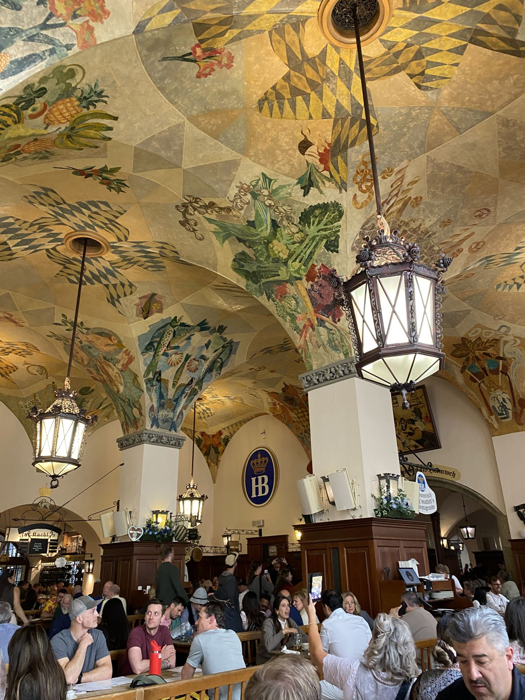
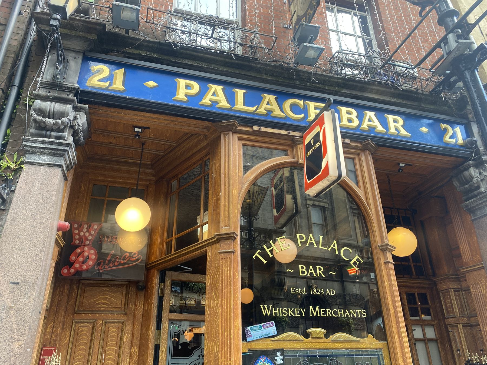

Recording the journey in photos
Quote by Nirmal Purja (1983-2026) in the documentary 14 PEAKS. If you haven't seen it, its inspirational. Unfortunately Nims was killed in an avalanche climbing Broad Peak in July 2026.
Over the years we've visited many breweries and most have been documented with photos. The quest is to post those images with a description.
Climbing is not a must complete challenge considering my peg leg, but provides a goal for accomplishing something -- the planning, the execution and documentation.
Ballparks is a bucket list to complete. Red Sox are my team and there are few parks like Fenway, but the goal would be to enjoy a game in all the parks.

Don't die, return home
Drink at least one beer.
Attend a game.